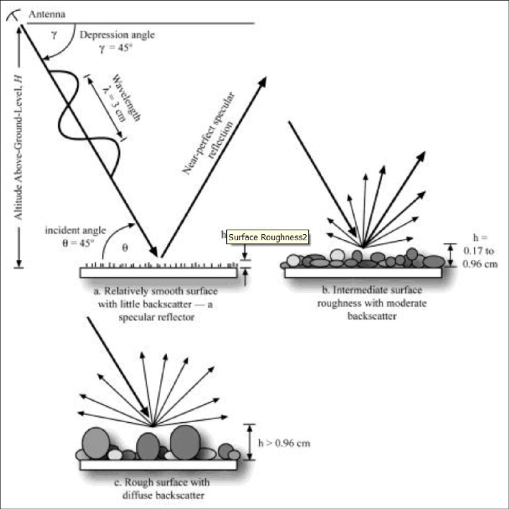

8 SAR
8.1 Summary
8.1.1 About Synthetic Aperture Radar (SAR)
SAR is a type of active sensor (like the bat), and it will emit electromagnetic wave to detect the Earth surface. The signal that bounce back from surface will be captured by the sensor and be translated from electral siganl to spatial information. As the wavelength of the waves are relatively long (e.g. C-band, 7.5-3.8 cm, NASA), it is hardly influenced by weather and cloud.
Compare to optical sensor, the SAR signal has more information, including the amplitude and wave phase.
8.1.2 Amplitude
The amplitude of SAR signal would be impacted by the backscattering of ground surface. This would result in the polarization of signal due to its roughness, volume, and dielectric constant. Since the reflected signal comes from the SAR sensor itself, the polarization of signal could be measured. This means SAR sensor can capture the structure of the ground.

8.1.3 Phase & InSAR
The InSAR is to combine the detection result from two sensors, which allows it to measure the phase shift of ground. This is because the first past sensor would store the reference phase, and the second sensor will compare the new phase with the reference one. In this case, t-test might be used.
8.1.4 Practical result
This practical demonstrate that SAR can detect the building structure change. By measuring the difference of surface variation before and after the explosion, and subtracting the noise, the buildings that were impacted by the explosion could be located. However, as suggested by the author, the limitation of remote sensing detection is that it could not capture the change that happen on the side of building, e.g. windows broken. This would imply that the remote sensing should be regarded as one of the monitoring and validation methods, which provides a guideline for Earth surface change. To ensure the accuracy of the information, field visit and combining with other references is neccessary.

8.2 Application
While remote sensing is generally applied to environmental observation, Henderson and Xia (1997) suggested that SAR could be also used for the detection of human settlement, population, and migration. This could help increasing the frequency of population census which was taken around each five or ten years.
In effect, though SAR signal can theoretically penetrate clouds, it would still influenced by the atmosphere due to the backscatter, in which scatters would interfere with each other. Therefore, finding constant factor within variation can mitigate the impact of the atmoshpere. Perissin and Wang (2010) verified the time-series InSAR application in China, involving the the application of PS-InSAR (wha’s that?).
Addition to remote sensing, SAR could be also applied to tactical class UAV for mission planning (Stecz & Gromada, 2020).
8.3 Reflection
The working principle of SAR reminds me of Bootstrap in data processing. Since the physical area that SAR sensor could detect in certain time is limit, it repeatly samples the region many times, which capture a larger amount of data than it actually has.
8.4 Reference
De Jong, J.T., 2013. Recent changes in glacier facies zonation on Devon Ice Cap, Nunavut, detected from SAR imagery and field validation methods. University of Ottawa (Canada).
Henderson, F.M. and Xia, Z.G., 1997. SAR applications in human settlement detection, population estimation and urban land use pattern analysis: a status report. IEEE transactions on geoscience and remote sensing, 35(1), pp.79-85.
Perissin, D. and Wang, T., 2010. Time-series InSAR applications over urban areas in China. IEEE Journal of Selected Topics in Applied Earth Observations and Remote Sensing, 4(1), pp.92-100.
Stecz, W. and Gromada, K., 2020. UAV mission planning with SAR application. Sensors, 20(4), p.1080.